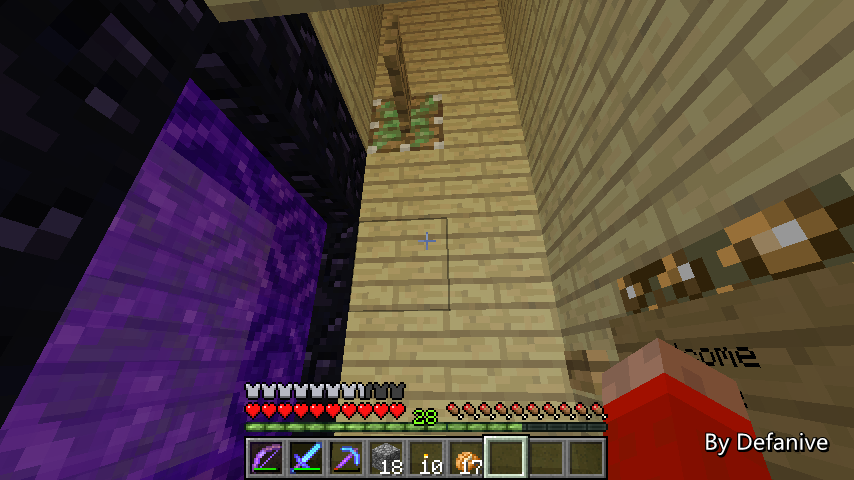

首页
上一页
260
261
262
263
264
265
265
266
267
268
269
270
下一页
末页
defanive2
无尽黑夜
14
同时这条无延迟电路的信号也给到了传送室内的电路
进行传送装置的重置
——来自 MCLive
20840楼
2013-08-10 10:50
defanive2
无尽黑夜
14
重置过程也很简单
信号会首先激活活塞，把矿车推回初始位置，再激活陷阱门
当信号消失时，陷阱门就会关闭，活塞也会收回
这样检测小黑眼扔出的电路就回到了初始状态
等待下一次使用
——来自 MCLive
20841楼
2013-08-10 10:52
defanive2
无尽黑夜
14
总体来说，整个装置就是这样了
我对这个装置的最终结果非常的满意
非常易用，非常稳定
电路重置方面也很简单安全
对于平时往返END节省了非常多的时间
在世界范围内也是第一个具有如此实用性的装置
个人对此非常的满意
——来自 MCLive
20848楼
2013-08-10 11:00
defanive2
无尽黑夜
14
而保护伞装置也是遗迹门的延伸
这个装置是在遗迹门做好了之后的第二天突发奇想
在创造实验了一下之后做的
对于其结果也是很满意
——来自 MCLive
20852楼
2013-08-10 11:05
defanive2
无尽黑夜
14
保护伞装置是建在家的地下室中的，从甘蔗场分支一个入口进去
这里就是传送的终点了
当保护伞被激活之后，就会被传送到这里
同样也是基于一样的原理，把小黑眼冻结在这个chunk中
不过稍微不同的是，这次没有END传送门
只有地狱门可以使用了
——来自 MCLive
20853楼
2013-08-10 11:08
defanive2
无尽黑夜
14
听起来似乎原理都一样，应该没什么难度
实际上难度在于地狱门有5秒的进入时间
而小黑眼即使不使用水流层
也只有6-7秒的飞行时间就会落地
但是不使用水流层进行定位的话
小黑眼落地位置就不确定，更有可能会在飞行中撞到墙壁
因此这个机器的设计难度比END门更高
——来自 MCLive
20857楼
2013-08-10 11:10
defanive2
无尽黑夜
14
最后我做出了一个并不是十分满意的设计
使用起来比END传送要没那么人性化
——来自 MCLive

20858楼
2013-08-10 11:12
defanive2
无尽黑夜
14
玩家需要首先把自己定位到这一格
这样当垂直向上时，可以瞄准到栅栏门
——来自 MCLive
20859楼
2013-08-10 11:13
defanive2
无尽黑夜
14
接下来点击一下这个按钮，会开始启动电路
——来自 MCLive
20860楼
2013-08-10 11:13
defanive2
无尽黑夜
14
然后玩家需要把指针重新向上看
手里拿着小黑眼对着栅栏门一直按住右键
——来自 MCLive
20861楼
2013-08-10 11:14
defanive2
无尽黑夜
14
过了1秒之后，栅栏门的活塞就会把栅栏门收回
这样的话，玩家就会投掷出小黑珍珠
而与此同时，会有一个2推拉活塞电路把玩家推进地狱门中
——来自 MCLive
20862楼
2013-08-10 11:16
defanive2
无尽黑夜
14
这样的话，从小黑珍珠被扔出到玩家进入地狱会有约5.1秒的时间
这样就可以给小黑眼增加4层的水流层，来进行飞行校准
为什么不能用之前的陷阱门+矿车呢
因为矿车落地需要约1秒的时间
这样从扔出到进地狱会有6+秒的时间
几乎快赶上小黑眼不加水层直接落地的时间了
因此就没有任何机会可以给小黑眼增加水层来进行飞行校准
——来自 MCLive
20864楼
2013-08-10 11:19
defanive2
无尽黑夜
14
于是整个让小黑眼冻结的装置就是这样了
重置需要约6-7秒的时间
相对来说并不十分满意，不过也可以接受
——来自 MCLive
20865楼
2013-08-10 11:20
defanive2
无尽黑夜
14
检测玩家有没有启动保护伞装置的部分相对比较简单
要做到无论玩家身在何方，只要放下这种方块就激发电路的话
就必须要使用到无线红石了
关于原版中实现无线红石我写过一篇帖子，大家可以去看看
看懂了那篇帖子的话，这个电路部分也不难理解了
要让这个无线红石的电路保持持续运行
就必须要让这个电路建在spawn chunk里面
spawn chunk可以保持电路和船一直运行
——来自 MCLive
20880楼
2013-08-10 11:25
defanive2
无尽黑夜
14
检测玩家有没有启动保护伞装置的部分相对比较简单
要做到无论玩家身在何方，只要放下这种方块就激发电路的话
就必须要使用到无线红石了
关于原版中实现无线红石我写过一篇帖子，大家可以去看看
看懂了那篇帖子的话，这个电路部分也不难理解了
要让这个无线红石的电路保持持续运行
就必须要让这个电路建在spawn chunk里面
spawn chunk可以保持电路和船一直运行
——来自 MCLive
20881楼
2013-08-10 11:25
defanive2
无尽黑夜
14
同样的是把输出的信号给到一个脉冲缩短器
再像之前电路一样一直把输出信号连接到我家里
然后也像之前那样强制加载5x5的chunk
这样就做到了放下方块时能够加载chunk并且把玩家传送回来
——来自 MCLive
20883楼
2013-08-10 11:29
defanive2
无尽黑夜
14
spawn chunk离这个地方也不远
大概2、300格左右
但是这次就没办法用旧工程的电路了
因为旧工程的电路已经被遗迹门给占用了
这次的话也是要自己挖并且同时铺电路
花费了2-3个小时，还算是可以接受
——来自 MCLive
20890楼
2013-08-10 11:33
defanive2
无尽黑夜
14
最后整个保护伞装置就是这样了
虽然说电路方面不是很满意
但是最终整个装置的效果是非常不错的
同样也是世界首个造出来的
个人认为实用性也非常高
尤其是野外探险时
总之非常满意
——来自 MCLive
20892楼
2013-08-10 11:34
defanive2
无尽黑夜
14
这2个工程对红石和粘性活塞的消耗量是非常大的
在建设这两个工程前特地去沼泽刷了2晚的史莱姆球
并且把一些旧工程的活塞给回收了
而且工程期间还进行了4次人工矿道挖矿
这样才做完了整个工程，并且预留了一定的红石
即使在有旧工程的基础上，这2个工程也消耗了近30组的红石
——来自 MCLive
20901楼
2013-08-10 11:37
defanive2
无尽黑夜
14
不过不管怎么说，个人对这2个工程是非常满意的
实用性非常高，而且也是世界首个
不过耗资相对比较大
好吧，今天的直播就到这里了
下次再见吧
——来自 MCLive
20902楼
2013-08-10 11:39
defanive2
无尽黑夜
14
PS 162更新之后睡醒了会出生在玻璃墙里面
个人知道的解决方法是，移动床的位置
或者把玻璃墙给改成实体墙
但是个人不希望修改床和顶楼玻璃墙的格局
不知道大家有没有什么解决方法
——来自 MCLive
20904楼
2013-08-10 11:41
defanive2
无尽黑夜
14
前几天和小剑
@_________Small
一起玩跑跑卡丁车
于是合作录了一期竞速的娱乐对抗视频
纯娱乐视频，笑点很多，喜欢跑车的朋友无聊可以看看
同时尝试了一下双人同时录像并剪辑到一个视频中，效果还不错
视频来自：
优酷
21014楼
2013-08-13 15:55
defanive2
无尽黑夜
14
UHC 第四季已经准备好发布了
由于奇奇怪怪的原因仍然是娱乐赛季
会非正式的在Meowcraft贴吧中由
@sinew28
进行发布
http://tieba.baidu.com/p/2527924058
大家可以关注新妞的U2B和UKU空间获得更快的UHC剧集哦
21019楼
2013-08-13 16:07
defanive2
无尽黑夜
14
好久不见！
最近已经很久都没直播了
今天晚上没有想睡的感觉（其实已经没有很久了）
那么就来直播吧
——来自 MCLive
21233楼
2013-08-20 11:12
defanive2
无尽黑夜
14
已经很久没有直播了
上次直播之后说到床的出生点问题
现在把床移到了右边
估计又要花很久才可以习惯了
——来自 MCLive
21267楼
2013-08-20 11:50
defanive2
无尽黑夜
14
很多观众对我的身体健康非常担忧
自从更新了土豆之后，小麦场变成了土豆场
主食也从面包变成了土豆
于是我就百度了一下只吃土豆的危害
“当完全素食者蛋白质摄入不足时，人体内的蛋白质、碳水化合物、脂肪就会失衡，免疫力下降、记忆力下降、贫血、消化不良就会接踵而来”
“维生素和烟酸也由于对脂溶性维生素的极少摄入和吸收而缺乏，腹泻说来就来了，此外还会容易感觉迟钝、皮炎肆虐等”
——来自 MCLive
21284楼
2013-08-20 12:11
defanive2
无尽黑夜
14
为了身体健康，为了不在MC世界中
“免疫力下降、记忆力下降、贫血、消化不良、腹泻、迟钝、皮炎肆虐”
我觉得要修改菜谱，加入肉食！
——来自 MCLive
21287楼
2013-08-20 12:14
defanive2
无尽黑夜
14
MC的3种肉类，鸡肉，猪肉，牛肉
三者中牛排当然是我最喜欢的东西了
看着很久以前spawn chunks里面的牛场
以后难道要时不时来牛场喂小麦杀牛吗。。
对于如此懒惰的我，必须要想办法自动化
要自动化。。自动化。。自。。化。。
看起来长期吃素的确会导致记忆力下降
——来自 MCLive
21294楼
2013-08-20 12:21
defanive2
无尽黑夜
14
思考了很久想出了一个不错的计划
我们先跑去创造世界思考一下吧
PS Panda4994很久之前也做过
一些细节没有仔细考虑到
于是我也跑去做了不少的测试
——来自 MCLive
21298楼
2013-08-20 12:28
defanive2
无尽黑夜
14
这次的工程就是动物塔了
类似刷怪塔，动物塔的目标就是不断的刷出动物
并且把动物收集+处理
做出一个自动化的食物+材料源
要设计好的刷怪塔，要理解刷怪机制
动物塔也一样，先来看看动物的刷怪机制吧
——来自 MCLive
21302楼
2013-08-20 12:33
首页
上一页
260
261
262
263
264
265
265
266
267
268
269
270
下一页
末页